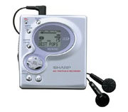

Az ismerőseim előbb-utóbb felfedezik bennem, hogy vannak bizonyos mániáim. Ezek közül most csak egyet említenék meg, a különös vonzódásomat a magneto-optikai rögzítőrendszerekhez. Amikor életemben először láttam minidisc lemezt, azonnal beleszerettem. Rajongásomat csak fokozta, amikor bővebb ismereteket is szereztem a magneto-optikai rögzítésről és a hozzá kötődő kódolási-tömörítési eljárásokról.
Homo aestheticus vagyok, aki soha nem fogja pontosan érteni a technológiát, de csodálja.
Életem első minidisc recorderét máig használom. Tízezer forintért vettem használtan. Ismerem már minden hibáját. Az mp3 discmanekhez képest sem egy nagy eresztés. Aztán az egyik zenész ismerősöm a kezembe nyomott egy régebbi típust azzal, hogy én úgyis több hasznát veszem, mint ő. Az előbbi készülék Sharp, utóbbi pedig Sony.
Úgy lesz történet ebből a bevezetőből, hogy a Sharp márkájú felvevőm NiMH akkumulátora hosszas küszködés után kiadta a lelkét. Ha egy napig nem hallgatok vele lemezt, teljesen lemerül. Felvenni már csak az adapter segedelmével lehet. Felkúsztam hát a Sharp magyar nyelvű honlapjára, hogy kontaktot keressek rajta. Szeretném megtudni, érdemes-e még akksit keresnem a kis felvevőmbe. A Sharp.hu címet beírva az ilyen cégektől megszokott - nem túl magas - minőségű honlap fogadott. Ami elsőre meglepett, hogy egyetlen kattintás kellett csak ahhoz, hogy emailt küldhessek az ügyfélszolgálatnak. Van olyan elektronikával és számomra különleges rögzítőeszközök gyártásával foglalkozó cég, akiktől az emailek egyszerűen visszapattannak. Fél éve tele a postaláda. De itt túlságosan olajozottan ment minden.
Nem is ez az igazi meglepetés. Van néhány unalmas pont a Sharp honlapján, egészen pontosan a Rólunk gomb alatt, amit végigolvastam azután, hogy feltűnt, a Sharp trükközik valamit a napkollektorokkal. Egy japán cég, amelyik 40 éve foglalkozik napenergia-felhasználással? Azt persze nem tudom, mennyire terhelték a tokiói öböl vizét a közel száz éves történelmük alatt, de a “mindig hegyes” mechanikus ceruza feltalálói bőven sokat tettek le ahhoz az asztalra, hogy - legalábbis civilizált emberként - kiérdemeljék tiszteletemet. Ha igazak a honlapjukon felsorolt állítások, már 20-30 éve olyan technológiát nyomnak, amit én még azóta se láttam nálunk. 1987-ben megtörtént az, ami miatt meg kellett ismernem ezt a céget: "Rendkívüli érzékenységű, mágneses érzékelő kifejlesztése magas
hőmérsékletű kerámia szupravezetőt használva. Törölhető/újraírható
magneto-optikai lemez (MOD) kifejlesztése és forgalmazása."
Most, hogy nyomtam nekik egy kis ingyenreklámot, amibe olyan fontos témákat is belekevertem, mint a környezetvédelem, nincs más hátra, mint előre, és várni a választ: kapok-e még akksit a régi felvevőmbe. Szívesebben vennék egy új, sokfunkciós minidisc recordert, de nem vagyok az a vásárolós fajta, főleg, amíg működik a régi. Bizonyára kellően érthetetlen mindenki számára, mi a fenéért tettem fel ezt az írást. Én sem értem, de muszáj volt hajnalban lelkendezni valamin. Ja, párhuzamos vonalon keresem a lehető legolcsóbb és legtökéletesebb kondenzátor mikrofont is... Csak attól a cégtől sajnos fél éve minden emailem visszapattan. Meg ők nem is foglalkoznak megújuló energiaforrásokhoz köthető innovációval.